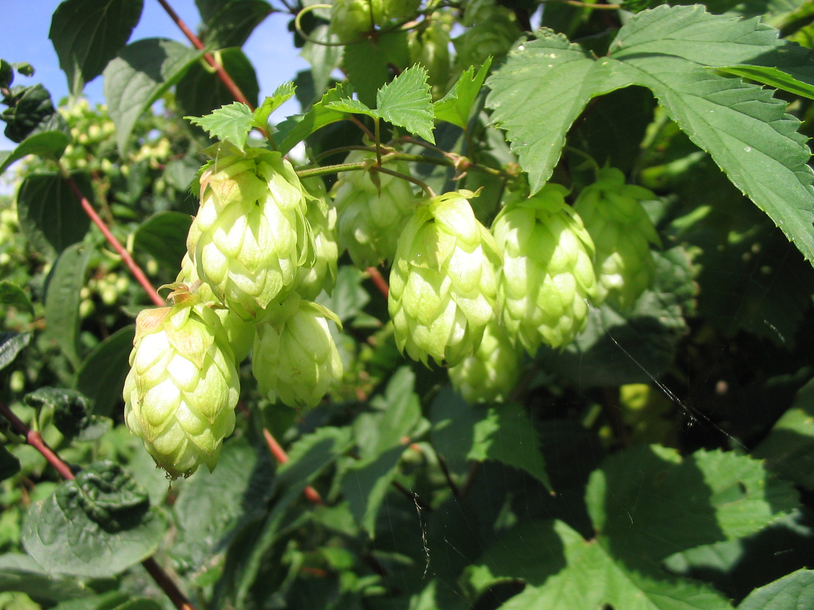

Humulus lupulus
common name: hops
en español: lúpulo
plant family: Cannabaceae (cannabis)
parts used: fresh and dried flowers  from Wikimedia Commons by Hagen Graebner, CC BY-SA 2.5
observations/description
"Humulus lupulus", Wikipedia
- simple leaves with 3–5 deep lobes that can be opposite or alternate
- staminate (male) flowers do not have petals, while the pistillate (female) flowers have petals enveloping the fruit
- female flower cones (or strobili) are known as hops
- fruit is an achene, meaning that it is dry and does not split open at maturity
- it is surrounded by tepals and lupulin-secreting glands are concentrated on the fruit
- species is sometimes described as a bine rather than a vine because it has stiff downward facing hairs that provide stability and allow it to climb
distribution/conservation status
"Humulus lupulus", Wikipedia
- native to Europe, western Asia, and North America
- grows best in the latitude range of 38°–51° in full sun with moderate amounts of rainfall
- widely cultivated for the beer brewing industry
primary actions
The Yoga of Herbs, p. 204
- bitter, nervine, diuretic
The New Age Herbalist, p. 36-7
- sedative, relaxant, antibacterial, anti-inflammatory, bitter, diuretic, anaphrodisiac
The Modern Herbal Dispensatory, p. 247-8
- analgesic, aphrodisiac, anaphrodisiac, antacid, anthelminthic, antispasmodic, nervine, phytoestrogen, sedative, soporific, hypnotic
notes from class, 27 May 2025
- anodyne, antispasmodic, aromatic, bitter, carminative, nervine, sedative
system affinities
nervous, digestive, reproductive
primary uses
The New Age Herbalist, p. 36-7
- flowers have sleep-inducing sedative effect, whether drunk as a tea or slept on as a pillow
- hops extracts shown to relax smooth muscle, especially of the digestive track
- with other digestive herbs to treat IBS, Crohn's, nervous stomach
- lupulone and humuloone are antibacterial, anti-inflammatory, and contribute to its bitter tonic effect
- can allay infection of the upper digestive tract that may provoke gastric and duodenal ulcers
- estrogenic principles in hops can disrupt/delay menstruation and may have an anaphrodisiac effect in men
- hormonal properties account for its use in skin-softening lotions/creams
- asparagin gives diuretic effect
The Modern Herbal Dispensatory, p. 247-8
- powerful nervine and sleep aid
- with carminatives to settle nervous, acidic stomach
- estrogenic
- can increase libido in women and decrease it in men
- indicated for hot digestive system or irritated nervous system
- balances pitta, kapha
notes from class, 27 May 2025
- resinous: need high alcohol content for tincture
- helpful for hypertension related to stress
- calming, reduces nervousness, can cause drowsiness
- estrogenic, supports menopause
- good for insomnia related to excitement or worry
- works well in pillows/satchels for sleep
energetics
The Yoga of Herbs, p. 204
- reduces pitta, kapha; increases vāta
- bitter/pungent taste - pungent post-digestive effect
- cooling
The Modern Herbal Dispensatory, p. 247-8
- cooling, relaxing
notes from class, 27 May 2025
- bitter, drying
pharmacology
The New Age Herbalist, p. 36-7
- volatile oil (up to 1%)
- incl. humulene, myrcene, B-caryophyllene, farnescene
- bitter resine complex (3-12%)
- incl. valeronic acid, lumulone, lupulone
- oil and bitter resins together known as lupulin
- geraniol, linalool, citral, linionene, serolidol, condensed tannins, flavonoid glycosides (astralagin, quercitrin, rutin), fats, amino acids, estrogenic substances, asparagin
contraindications/pharmaceutical interactions/warnings
The New Age Herbalist, p. 36-7
- pollen from the strobiles may cause contact dermatitis
- not recommended in the treatment of depressive illnesses due to the strong sedative effect
The Modern Herbal Dispensatory, p. 247-8
- contraindicated in clinical depression, estrogen dominance, or allergies to hops
- not the best choice for young children
- use with caution during pregnancy due to estrogenic effects
notes from class, 27 May 2025
- avoid during pregnancy
- should not be used with prepubescent children
- contraindicated with estrogen-dependent diseases
- use with caution with depression, may be okay with mild/moderate depression but want to avoid in severe cases
- may interact with pharmaceutical sedatives
preparations
- tisane
- macerate
- tincture
- glycerite
- powder
dosage
The Modern Herbal Dispensatory, p. 247-8
- infusion: 4-8 oz, up to 3/day
- tincture: 1-3 mL, 3/day
- powder: 1000-2000 mg, 3/day
notes from class, 27 May 2025
- tincture: 1-2 mL at night for sleep, 10-15 drops during the day (use with caution, test to see if too sedating)
extra information
The New Age Herbalist, p. 36-7
- name lupulus comes from its tendency to intertwine around willows and other trees; Pliny called it 'willow wolf'
personal experiences/simples
witchcraft
recipes
sources
Easely, Thomas and Steven Horne. The Modern Herbal Dispensatory (2016)
Frawley, David and Vasant Lad. The Yoga of Herbs: An Ayurvedic Guide to Herbal Medicine (1986)
Goldberg Blackthorn, Samantha and Shona MacDougall. Ace of Cups Herbal Medicine and Botanical Magic Herbal School (2024)
"Humulus lupulus" on Wikipedia. Retrieved 9 June 2025.
Mabey, Richard et al. The New Age Herbalist (1988)